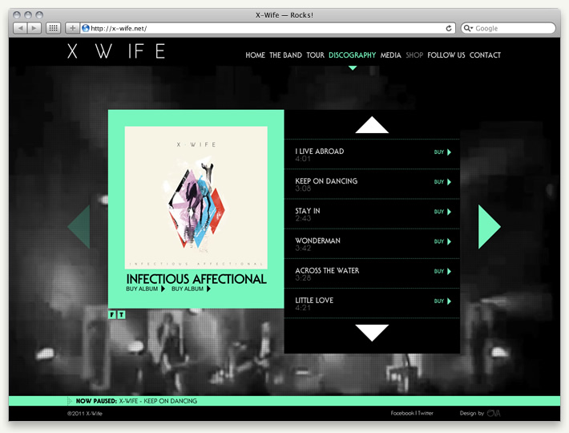
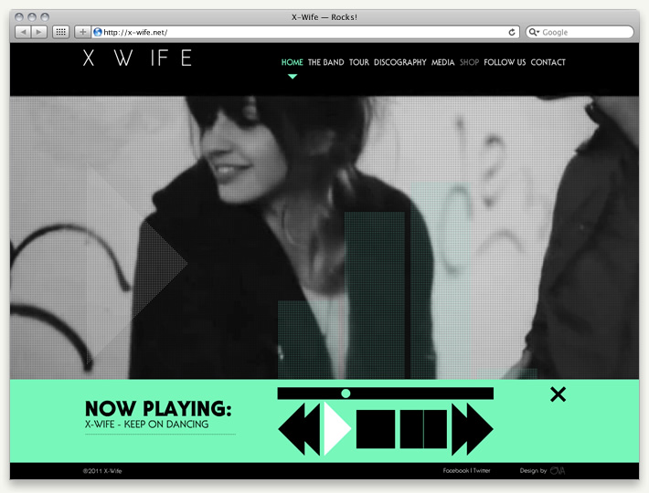

X-Wife
A website to promote X-Wife, a portuguese rock band.
Built with HTML4, Flash and Javascript based interactivity, uses Twitter, Flickr, Youtube and Vimeo APIs integrated with a bespoke CMS to generate and update contents.
Awarded Silver at Festival Clube de Criativos de Portugal in 2012.
Roles: Ideation, Creative Tech Direction, Front-end and Back-end Coding, Search Engine Optimisation.
Languages: XHTML, CSS, Javascript, Actionscript, XML, JSON, PHP, MySQL.
Year: 2011
URL: http://www.x-wife.net




Credits:
User Interface Design by David Carvalho.
©2011 X-Wife